Descobreix les rutes del Parc Natural dels Ports
Explora les rutes fàcils, moderades i difícils sobre el mapa interactiu. Fes clic sobre qualsevol traçat per veure més informació.
📸 Moments capturats
 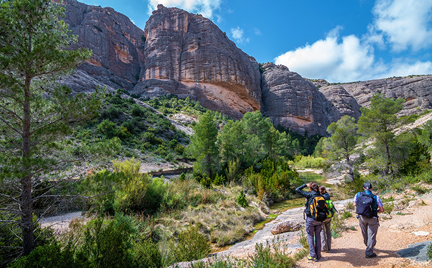
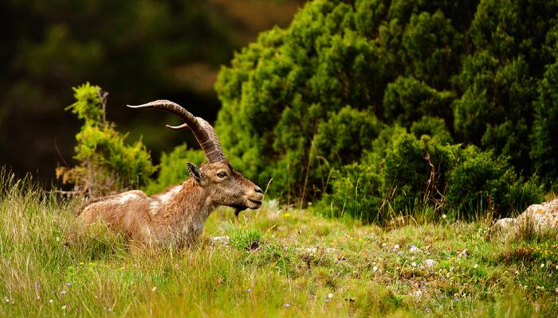
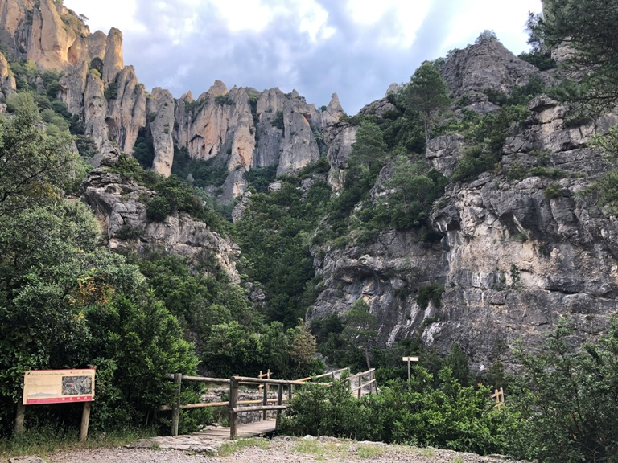
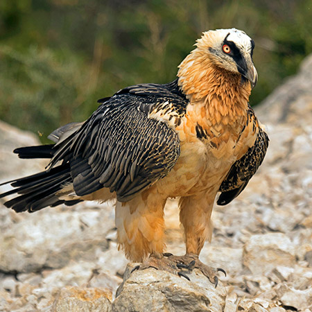
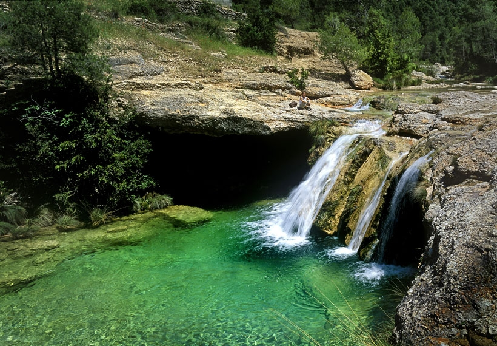
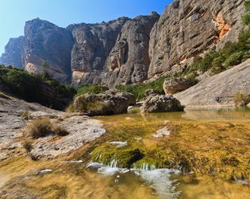
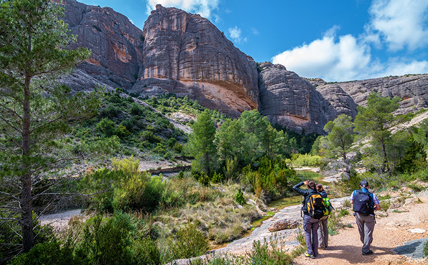
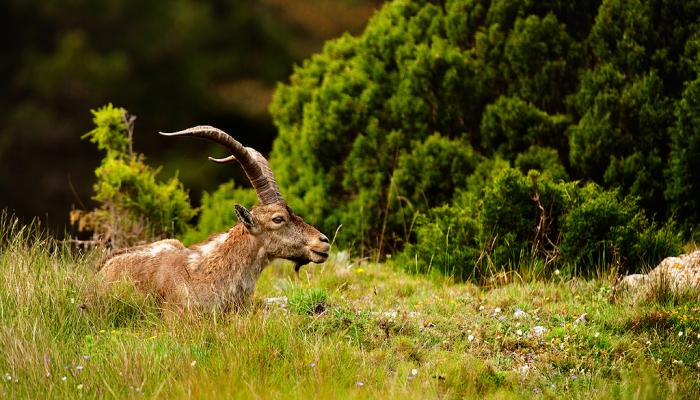
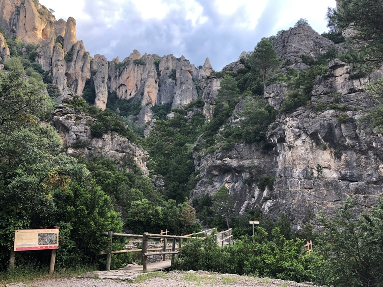
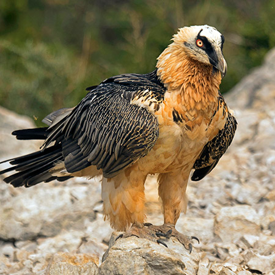
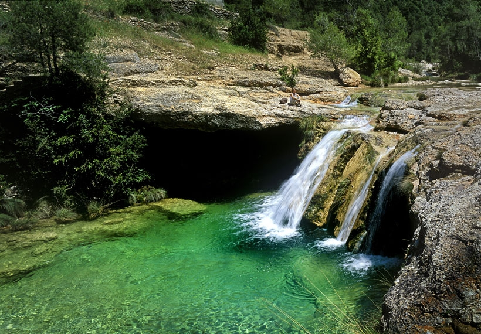
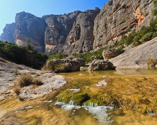